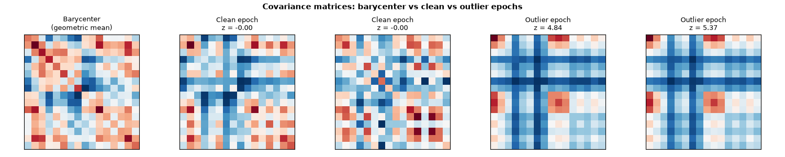
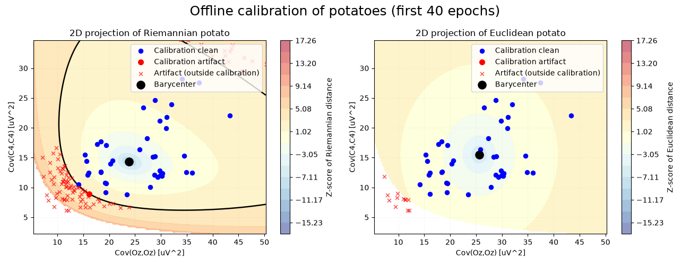
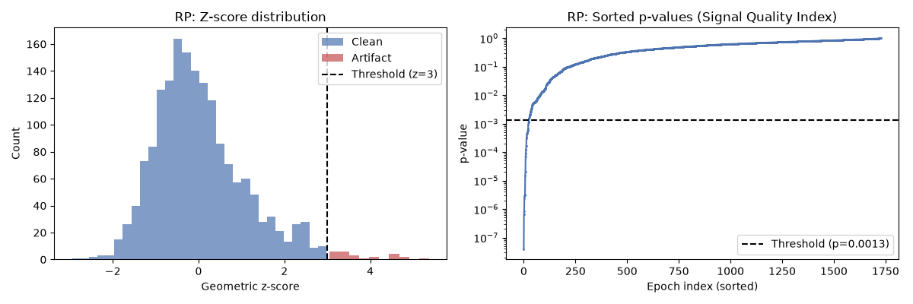
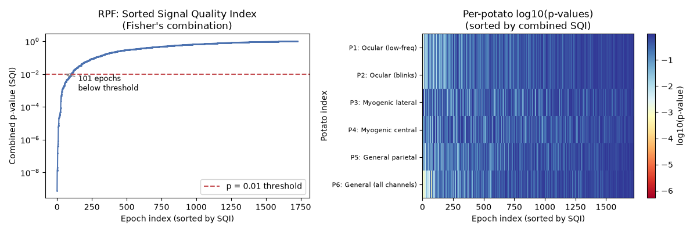
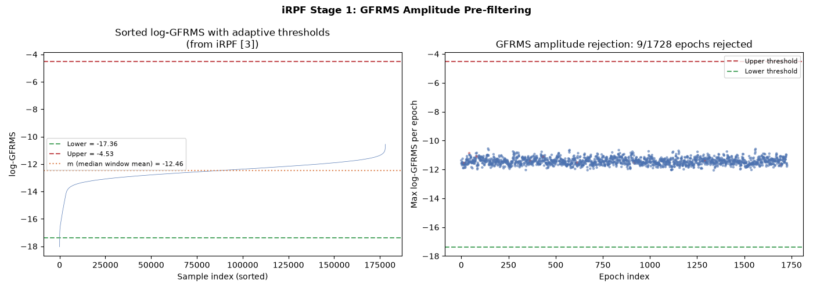
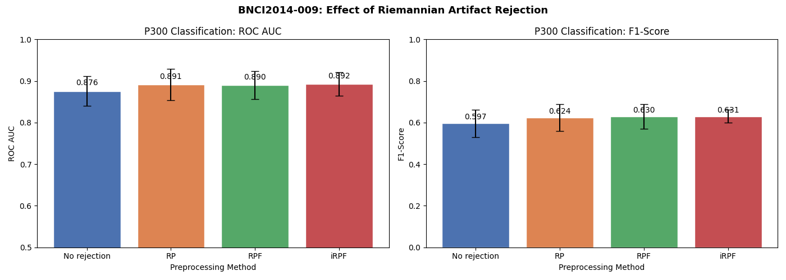
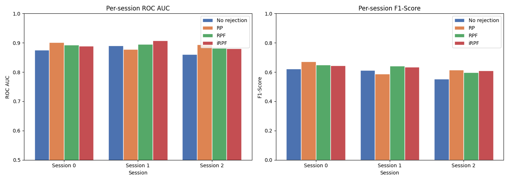
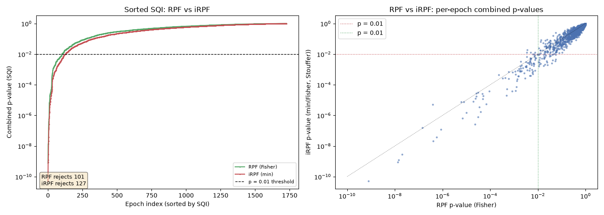

Note
Go to the end to download the full example code.
Riemannian Artifact Rejection as a Pre-processing Step#
Electroencephalography (EEG) signal cleaning has long been a critical challenge in the research community. The presence of artifacts can significantly degrade EEG data quality, complicating analysis and potentially leading to erroneous interpretations. These artifacts are broadly categorized as either endogenous (biological: ocular, myogenic, cardiac) or exogenous (environmental, instrumental). As noted in [3], manual annotation of artifacts is time-consuming, subjective, and impractical for large-scale EEG studies.
Riemannian geometry provides an elegant framework for automatic artifact detection. The key feature of interest is the covariance matrix derived from EEG epochs. Each epoch of \(N\) channels and \(T\) time samples yields a covariance matrix \(\Sigma = \frac{1}{T-1} X X^\top\) that lies on the manifold of Symmetric Positive Definite (SPD) matrices \(\mathcal{M}_N\). The affine-invariant Riemannian distance between two SPD matrices is:
where \(\lambda_n\) are the eigenvalues of \(\Sigma_1^{-1} \Sigma_2\).
This tutorial introduces three progressively more powerful Riemannian artifact rejection methods and demonstrates how to integrate them into a MOABB pre-processing pipeline using pipeline surgery:
Riemannian Potato (RP) [1] — a single-potato detector based on Riemannian distance to the geometric mean (barycenter).
Riemannian Potato Field (RPF) [2] — multiple potatoes, each targeting specific artifact types via channel subsets and frequency bands, combined using Fisher’s method.
Improved RPF (iRPF) [3] — enhanced RPF with GFRMS amplitude pre-filtering to remove severely corrupted epochs, per-potato distance metrics, and both Fisher’s and Stouffer’s (Liptak) combination functions for a more sensitive rejection criterion.
We apply these methods to the BNCI2014-009 P300 dataset and design a potato field following the principles described in [3].
References#
# Authors: Davoud Hajhassani <https://orcid.org/0009-0008-6674-5546>
# Bruno Aristimunha <b.aristimunha@gmail.com>
#
# License: BSD (3-clause)
Imports and Setup#
We import the necessary libraries. The key components are:
Potatofrom pyriemann for artifact detectionCovariancesfor estimating covariance matricesFunctionTransformerto wrap our rejection functions into pipeline stepsStepTypeto insert steps at the right position in the MOABB pipeline
import warnings
import matplotlib.pyplot as plt
import numpy as np
import pandas as pd
from pyriemann.classification import MDM
from pyriemann.clustering import Potato, PotatoField
from pyriemann.estimation import Covariances, ERPCovariances
from pyriemann.utils.covariance import normalize
from scipy.stats import combine_pvalues, norm
from sklearn.pipeline import make_pipeline
from sklearn.preprocessing import FunctionTransformer
import moabb
from moabb.datasets import BNCI2014_009
from moabb.datasets.bids_interface import StepType
from moabb.evaluations import WithinSessionEvaluation
from moabb.paradigms import P300
# Suppress warnings from pyriemann's covariance estimation (RuntimeWarning
# for near-singular matrices) and sklearn deprecation notices (FutureWarning).
warnings.filterwarnings("ignore", category=FutureWarning, module="sklearn")
warnings.filterwarnings("ignore", category=RuntimeWarning, module="pyriemann")
moabb.set_log_level("info")
def predict_clean_mask(model, covariances):
"""Return clean-epoch mask across pyRiemann label encodings."""
labels = np.asarray(model.predict(covariances))
if np.issubdtype(labels.dtype, np.number) and np.any(labels < 0):
return labels > 0
return labels.astype(bool)
Load Dataset and Visualize Data#
We use the BNCI2014-009 dataset, a 16-channel P300 speller recorded at 256 Hz from 10 subjects [4]. The channels are: Fz, Cz, Pz, Oz, P3, P4, PO7, PO8, F3, F4, FCz, C3, C4, CP3, CPz, CP4.
We load epochs using return_epochs=True to demonstrate the
Riemannian artifact detection concepts visually before integrating them
into the MOABB evaluation pipeline.
dataset = BNCI2014_009()
# Use 2 subjects for evaluation (more stable results across sessions).
# Subject 1 is used for all visualizations below.
dataset.subject_list = dataset.subject_list[:2]
paradigm = P300(resample=128, scorer={"roc_auc": "roc_auc", "f1": "f1"})
# Load epochs from subject 1 for visualization
dataset_viz = BNCI2014_009()
dataset_viz.subject_list = dataset.subject_list[:1]
epochs, labels, meta = paradigm.get_data(dataset_viz, return_epochs=True)
print(f"Loaded {len(epochs)} epochs, {len(epochs.ch_names)} channels")
print(f"Channels: {epochs.ch_names}")
Loaded 1728 epochs, 16 channels
Channels: ['Fz', 'Cz', 'Pz', 'Oz', 'P3', 'P4', 'PO7', 'PO8', 'F3', 'F4', 'FCz', 'C3', 'C4', 'CP3', 'CPz', 'CP4']
The Riemannian Potato — Concept#
The Riemannian Potato (RP) [1] works as follows. For each EEG epoch \(i\), we compute the covariance matrix \(\Sigma_i\) and the Riemannian distance \(d_i\) to the barycenter \(\bar{\Sigma}\):
As noted in [2], Riemannian distances are empirically right-skewed and positive-only, so the geometric z-score is more appropriate than the arithmetic one:
The geometric z-score is then \(z_i = \log(d_i / \mu) / \log(\sigma)\), and the p-value is \(p_i = 1 - \Phi(z_i)\) where \(\Phi\) is the standard normal CDF. Epochs with z-scores above a threshold (e.g., 3) are flagged as artifacts.
Limitation: As the number of channels increases, the distance becomes an average over many sensor contributions. Artifacts affecting only a few channels may not produce a large enough distance to be detected [2]. This motivates the Potato Field.
Visualizing the Riemannian Potato#
We compute covariance matrices and fit a Riemannian Potato to illustrate how z-scores separate clean from artifacted epochs. This visualization is inspired by Figure 2 of [3].
data = epochs.get_data()
covs = Covariances(estimator="lwf").transform(data)
# Fit potato and get z-scores.
# The metric parameter accepts a string or a dict with "mean" and "distance"
# keys (see pyriemann.utils.mean.mean_covariance and
# pyriemann.utils.distance.distance). Using the dict form makes explicit
# which metric is used for barycenter estimation vs distance computation.
potato = Potato(metric={"mean": "riemann", "distance": "riemann"}, threshold=3)
potato.fit(covs)
z_scores = potato.transform(covs)
is_clean = predict_clean_mask(potato, covs)
print(f"RP detected {(~is_clean).sum()}/{len(covs)} artifact epochs")
# --- Figure 1: Covariance matrix heatmaps (inspired by Fig. 2 of the paper)
# Show the barycenter, two clean epochs, and two outlier epochs
fig, axes = plt.subplots(1, 5, figsize=(15, 3), facecolor="white")
# Barycenter
barycenter = potato.covmean_
im = axes[0].imshow(barycenter, cmap="RdBu_r", aspect="equal")
axes[0].set_title("Barycenter\n(geometric mean)", fontsize=9)
# Two epochs closest to barycenter (most clean)
sorted_idx = np.argsort(np.abs(z_scores))
for j, idx in enumerate(sorted_idx[:2]):
axes[1 + j].imshow(covs[idx], cmap="RdBu_r", aspect="equal")
axes[1 + j].set_title(f"Clean epoch\nz = {z_scores[idx]:.2f}", fontsize=9)
# Two epochs farthest from barycenter (most artifacted)
for j, idx in enumerate(sorted_idx[-2:]):
axes[3 + j].imshow(covs[idx], cmap="RdBu_r", aspect="equal")
axes[3 + j].set_title(f"Outlier epoch\nz = {z_scores[idx]:.2f}", fontsize=9)
for ax in axes:
ax.set_xticks([])
ax.set_yticks([])
fig.suptitle(
"Covariance matrices: barycenter vs clean vs outlier epochs",
fontsize=11,
fontweight="bold",
)
plt.tight_layout()
plt.show()

RP detected 25/1728 artifact epochs
2D Projection of the Riemannian Potato#
This visualization is inspired by Figure 1 of [2] (see also pyRiemann’s example). We project the covariance matrices onto a 2D plane defined by two selected channels (Oz and C4) and display the z-score isocontours. The characteristic “potato” shape arises from the non-linearity of the Riemannian manifold. Clean epochs cluster inside the potato, while artifacts fall outside.
# Select two channels with clearer spread for this 2D visualization
ch_name_x = "Oz"
ch_name_y = "C4"
ch_idx_x = epochs.ch_names.index(ch_name_x)
ch_idx_y = epochs.ch_names.index(ch_name_y)
covs_2d = covs[:, [ch_idx_x, ch_idx_y], :][:, :, [ch_idx_x, ch_idx_y]]
# Offline calibration on early epochs, following pyRiemann's potato example.
n_calib_2d = min(40, len(covs_2d))
z_threshold_2d = 3.0
potato_2d = Potato(
metric={"mean": "riemann", "distance": "riemann"}, threshold=z_threshold_2d
)
potato_2d.fit(covs_2d[:n_calib_2d])
z_2d = potato_2d.transform(covs_2d)
is_clean_2d = predict_clean_mask(potato_2d, covs_2d)
barycenter_2d = potato_2d.covmean_
# Extract the (0,0) and (1,1) diagonal entries for plotting.
# Scale to uV^2 for more readable axis values.
cov_scale = 1e12
x_vals = covs_2d[:, 0, 0] * cov_scale
y_vals = covs_2d[:, 1, 1] * cov_scale
# Compare Riemannian and Euclidean potatoes on the same calibration set.
potato_2d_euclid = Potato(
metric={"mean": "euclid", "distance": "euclid"}, threshold=z_threshold_2d
)
potato_2d_euclid.fit(covs_2d[:n_calib_2d])
calib_x = x_vals[:n_calib_2d]
calib_y = y_vals[:n_calib_2d]
x_p01, x_p99 = np.percentile(calib_x, [1, 99])
y_p01, y_p99 = np.percentile(calib_y, [1, 99])
x_pad = 0.35 * max(x_p99 - x_p01, 1e-12)
y_pad = 0.35 * max(y_p99 - y_p01, 1e-12)
x_grid = np.linspace(x_p01 - x_pad, x_p99 + x_pad, 140)
y_grid = np.linspace(y_p01 - y_pad, y_p99 + y_pad, 140)
xx, yy = np.meshgrid(x_grid, y_grid)
def make_z_map(model):
"""Compute z-score map on a diagonal covariance grid."""
off_diag = model.covmean_[0, 1]
grid_covs = np.zeros((len(x_grid) * len(y_grid), 2, 2))
grid_covs[:, 0, 0] = xx.ravel() / cov_scale
grid_covs[:, 1, 1] = yy.ravel() / cov_scale
grid_covs[:, 0, 1] = off_diag
grid_covs[:, 1, 0] = off_diag
det = grid_covs[:, 0, 0] * grid_covs[:, 1, 1] - off_diag**2
valid = det > 0
z_grid = np.full(len(grid_covs), np.nan)
if valid.sum() > 0:
z_grid[valid] = model.transform(grid_covs[valid])
return np.ma.masked_invalid(z_grid.reshape(xx.shape))
z_map_riemann = make_z_map(potato_2d)
z_map_euclid = make_z_map(potato_2d_euclid)
z_abs_max = np.nanmax(
np.abs(
np.hstack(
[z_map_riemann.compressed(), z_map_euclid.compressed(), [z_threshold_2d]]
)
)
)
z_levels = np.linspace(-z_abs_max, z_abs_max, 18)
fig, axes = plt.subplots(1, 2, figsize=(13, 5), facecolor="white")
plot_specs = [
(axes[0], potato_2d, z_map_riemann, "Riemannian", "Z-score of Riemannian distance"),
(
axes[1],
potato_2d_euclid,
z_map_euclid,
"Euclidean",
"Z-score of Euclidean distance",
),
]
for ax, model, z_map, title_name, cbar_label in plot_specs:
contour = ax.contourf(xx, yy, z_map, levels=z_levels, cmap="RdYlBu_r", alpha=0.55)
ax.contour(xx, yy, z_map, levels=[z_threshold_2d], colors=["black"], linewidths=1.8)
# Classify points in the same projected space as the contour:
# keep per-epoch diagonal entries and fix off-diagonal to model barycenter.
off_diag = model.covmean_[0, 1]
covs_2d_projected = covs_2d.copy()
covs_2d_projected[:, 0, 1] = off_diag
covs_2d_projected[:, 1, 0] = off_diag
det_points = covs_2d_projected[:, 0, 0] * covs_2d_projected[:, 1, 1] - off_diag**2
valid_points = det_points > 0
is_clean_full = np.zeros(len(covs_2d_projected), dtype=bool)
if valid_points.sum() > 0:
is_clean_full[valid_points] = predict_clean_mask(
model, covs_2d_projected[valid_points]
)
is_calib = np.zeros(len(covs_2d), dtype=bool)
is_calib[:n_calib_2d] = True
is_clean_calib = is_calib & is_clean_full
is_artifact_calib = is_calib & ~is_clean_full
is_artifact_eval = ~is_calib & ~is_clean_full
ax.scatter(
x_vals[is_clean_calib],
y_vals[is_clean_calib],
c="blue",
s=34,
label="Calibration clean",
zorder=4,
)
ax.scatter(
x_vals[is_artifact_calib],
y_vals[is_artifact_calib],
c="red",
s=48,
label="Calibration artifact",
zorder=5,
)
ax.scatter(
x_vals[is_artifact_eval],
y_vals[is_artifact_eval],
c="red",
s=24,
alpha=0.65,
marker="x",
linewidths=1.2,
label="Artifact (outside calibration)",
zorder=5,
)
ax.scatter(
model.covmean_[0, 0] * cov_scale,
model.covmean_[1, 1] * cov_scale,
c="black",
s=120,
marker="o",
label="Barycenter",
zorder=5,
)
ax.set_title(f"2D projection of {title_name} potato")
ax.set_xlabel(f"Cov({ch_name_x},{ch_name_x}) [uV^2]")
ax.set_ylabel(f"Cov({ch_name_y},{ch_name_y}) [uV^2]")
ax.set_xlim(x_grid.min(), x_grid.max())
ax.set_ylim(y_grid.min(), y_grid.max())
ax.grid(alpha=0.2, linestyle=":")
ax.legend(loc="upper right")
plt.colorbar(contour, ax=ax, label=cbar_label)
fig.suptitle(f"Offline calibration of potatoes (first {n_calib_2d} epochs)", fontsize=18)
plt.tight_layout()
plt.show()

The z-score distribution shows how the potato separates clean data from outliers. Clean epochs have low z-scores while artifact epochs have high z-scores, beyond the threshold.
fig, axes = plt.subplots(1, 2, figsize=(12, 4), facecolor="white")
# Z-score histogram
axes[0].hist(z_scores[is_clean], bins=30, alpha=0.7, label="Clean", color="#4C72B0")
axes[0].hist(z_scores[~is_clean], bins=10, alpha=0.7, label="Artifact", color="#C44E52")
axes[0].axvline(3, color="k", linestyle="--", linewidth=1.5, label="Threshold (z=3)")
axes[0].set_xlabel("Geometric z-score")
axes[0].set_ylabel("Count")
axes[0].set_title("RP: Z-score distribution")
axes[0].legend()
# Sorted distances (inspired by Fig. 6 of the paper)
p_values = 1 - norm.cdf(z_scores)
sorted_p = np.sort(p_values)
axes[1].plot(sorted_p, ".-", markersize=2, color="#4C72B0")
axes[1].set_xlabel("Epoch index (sorted)")
axes[1].set_ylabel("p-value")
axes[1].set_title("RP: Sorted p-values (Signal Quality Index)")
axes[1].set_yscale("log")
axes[1].axhline(
1 - norm.cdf(3),
color="k",
linestyle="--",
linewidth=1.5,
label=f"Threshold (p={1 - norm.cdf(3):.4f})",
)
axes[1].legend()
plt.tight_layout()
plt.show()

The Riemannian Potato Field — Concept#
The Riemannian Potato Field (RPF) [2] addresses the limitation of the single potato by using multiple low-dimensional potatoes in parallel, each tailored to detect specific types of artifacts that influence particular spatial regions within certain frequency bands.
As described in [2], the output z-scores from all \(J\) potatoes are converted to p-values and merged into a single Signal Quality Index (SQI) using Fisher’s combination function [5]:
In practice, per-potato p-values are dependent, so we use the combined score as a practical summary of deviancy from the clean-data barycenters and apply an empirical rejection threshold.
The iRPF method [3] further introduces Liptak’s combination:
and a Tippett meta-combination of both Fisher and Liptak results: \(q = \min(p_{\text{Fisher}}, p_{\text{Liptak}})\), providing a more precise determination of the rejection region.
Distance metrics for different artifact types#
A key insight from [3] is that different distance metrics are suited for detecting different artifact types:
Riemannian distance (affine-invariant): captures the full structure of covariance matrices. Effective for artifacts with co-variation across electrodes (e.g., blinks).
Euclidean distance: \(\delta_E(\Sigma_1, \Sigma_2) = \|\Sigma_1 - \Sigma_2\|_F\). More effective for artifacts like vertical eye movements that produce large co-variation patterns.
Diagonal Euclidean distance: \(\delta_{\text{diag}(E)} = \|\text{diag}(\Sigma_1 - \Sigma_2)\|_F\). Focuses on the diagonal elements (channel variances), effective for myogenic artifacts that primarily impact individual channels without cross-electrode co-variation.
Potato Field Design#
The RPF framework [2] provides the general multi-potato architecture: multiple low-dimensional potatoes operating in parallel, each on a specific channel subset and frequency band, with Fisher’s combination to merge their outputs. The iRPF [3] (Section 2.5) extends this with specific sub-region and channel selection design principles for different artifact types:
Ocular artifacts: frontal channels (Fp, AF, F), low frequency (0.1-7 Hz), Riemannian or Euclidean distance.
Myogenic artifacts (EMG): peripheral channels (F7/F8, T7/T8, P7/P8, O1/O2), high frequency (>20 Hz), diagonal Euclidean distance — since EMG primarily impacts individual channel variances.
General artifacts: broader channel sets, wide frequency bands, Riemannian distance.
For the BNCI2014-009 dataset (16 channels, no EOG, bandpass 1-24 Hz applied by the P300 paradigm), we adapt the design principles from [3] (Tables 2-5):
# |
Channels |
Metric |
Freq (Hz) |
Target Artifact |
|---|---|---|---|---|
1 |
F3, Fz, F4 |
euclid |
1-7 |
Ocular (frontal, low-freq) |
2 |
F3, Fz, F4 |
riemann |
1-7 |
Ocular (blinks, co-variation) |
3 |
PO7, PO8, P3, P4 |
riemann |
16-24 |
Myogenic lateral |
4 |
C3, Cz, C4 |
riemann |
16-24 |
Myogenic central |
5 |
CP3, CPz, CP4, Pz |
riemann |
1-24 |
General parietal |
6 |
All 16 channels |
riemann |
1-24 |
General (full headset) |
# Use None for channels to indicate "all available channels". This is
# resolved dynamically in compute_potato_covariances, making the config
# reusable across datasets with different channel sets.
POTATO_FIELD_CONFIG = [
{
"channels": ["F3", "Fz", "F4"],
"low_freq": 1.0,
"high_freq": 7.0,
"metric": "euclid",
"normalization": None,
"target": "Ocular (low-freq)",
},
{
"channels": ["F3", "Fz", "F4"],
"low_freq": 1.0,
"high_freq": 7.0,
"metric": "riemann",
"normalization": None,
"target": "Ocular (blinks)",
},
{
"channels": ["PO7", "PO8", "P3", "P4"],
"low_freq": 16.0,
"high_freq": 24.0,
"metric": "riemann",
"normalization": "trace",
"target": "Myogenic lateral",
},
{
"channels": ["C3", "Cz", "C4"],
"low_freq": 16.0,
"high_freq": 24.0,
"metric": "riemann",
"normalization": "trace",
"target": "Myogenic central",
},
{
"channels": ["CP3", "CPz", "CP4", "Pz"],
"low_freq": 1.0,
"high_freq": 24.0,
"metric": "riemann",
"normalization": None,
"target": "General parietal",
},
{
"channels": None,
"low_freq": 1.0,
"high_freq": 24.0,
"metric": "riemann",
"normalization": None,
"target": "General (all channels)",
},
]
Potato Field — Visual Demonstration#
We compute per-potato covariance matrices and fit individual potatoes to visualize how each potato targets different artifacts. This follows the approach described in [3] (Section 2.5) where each potato operates on a specific channel subset and frequency band.
def compute_potato_covariances(epochs, config):
"""Compute covariance matrices for each potato in the field.
For each potato configuration, this function:
1. Resolves channel selection (``None`` means all channels)
2. Copies and picks the relevant channel subset
3. Applies bandpass filtering for the target frequency band.
The paradigm already applies a broadband filter (e.g., 1-24 Hz
for P300); per-potato filtering further narrows within that band.
4. Computes covariance matrices using Ledoit-Wolf shrinkage
5. Optionally normalizes the covariances
Parameters
----------
epochs : mne.Epochs
The input epochs.
config : list of dict
Potato field configuration. Each dict must contain:
``channels`` (list of str or None for all channels),
``low_freq``, ``high_freq``, ``metric``, ``normalization``,
and ``target``.
Returns
-------
cov_list : list of ndarray
List of covariance matrices arrays, one per potato.
"""
cov_list = []
for potato_cfg in config:
channels = potato_cfg["channels"]
if channels is None:
channels = epochs.ch_names
ep = epochs.copy().pick(channels)
# IIR filtering is used here for speed; the paradigm's broadband
# filter has already been applied, so this narrows the band further.
ep.filter(
l_freq=potato_cfg["low_freq"],
h_freq=potato_cfg["high_freq"],
method="iir",
verbose=False,
)
covs = Covariances(estimator="lwf").transform(ep.get_data())
if potato_cfg.get("normalization") is not None:
covs = normalize(covs, potato_cfg["normalization"])
cov_list.append(covs)
return cov_list
def min_fisher_stouffer(probas, axis=0):
"""Combine p-values as min(Fisher, Stouffer)."""
_, fisher_p = combine_pvalues(probas, method="fisher", axis=axis)
_, stouffer_p = combine_pvalues(probas, method="stouffer", axis=axis)
return np.minimum(fisher_p, stouffer_p)
# Compute covariance matrices for each potato
cov_list = compute_potato_covariances(epochs, POTATO_FIELD_CONFIG)
# Fit a PotatoField (single metric for all potatoes, as in [2]_)
rpf_vis = PotatoField(
n_potatoes=len(POTATO_FIELD_CONFIG),
metric={"mean": "riemann", "distance": "riemann"},
z_threshold=3,
p_threshold=0.01,
)
rpf_vis.fit(cov_list)
z_matrix = rpf_vis.transform(cov_list) # (n_epochs, n_potatoes)
potato_z_scores = [z_matrix[:, i] for i in range(z_matrix.shape[1])]
potato_p_values = [1 - norm.cdf(z) for z in potato_z_scores]
for i, (z, cfg) in enumerate(zip(potato_z_scores, POTATO_FIELD_CONFIG)):
n_outliers = (z > 3).sum()
ch_list = cfg["channels"] if cfg["channels"] is not None else epochs.ch_names
ch_display = f"ch={ch_list[:3]}{'...' if len(ch_list) > 3 else ''}"
print(
f"Potato {i + 1} ({cfg['target']}): "
f"{n_outliers}/{len(z)} outliers, "
f"{ch_display}, "
f"freq={cfg['low_freq']}-{cfg['high_freq']} Hz"
)
Potato 1 (Ocular (low-freq)): 5/1728 outliers, ch=['F3', 'Fz', 'F4'], freq=1.0-7.0 Hz
Potato 2 (Ocular (blinks)): 5/1728 outliers, ch=['F3', 'Fz', 'F4'], freq=1.0-7.0 Hz
Potato 3 (Myogenic lateral): 0/1728 outliers, ch=['PO7', 'PO8', 'P3']..., freq=16.0-24.0 Hz
Potato 4 (Myogenic central): 0/1728 outliers, ch=['C3', 'Cz', 'C4'], freq=16.0-24.0 Hz
Potato 5 (General parietal): 0/1728 outliers, ch=['CP3', 'CPz', 'CP4']..., freq=1.0-24.0 Hz
Potato 6 (General (all channels)): 29/1728 outliers, ch=['Fz', 'Cz', 'Pz']..., freq=1.0-24.0 Hz
Per-potato z-score distributions#
Each potato produces its own z-score distribution. Potatoes targeting different artifact types will flag different epochs, demonstrating why a field of potatoes provides better coverage than a single potato.
fig, axes = plt.subplots(2, 3, figsize=(14, 7), facecolor="white")
axes = axes.ravel()
for i, (z, cfg) in enumerate(zip(potato_z_scores, POTATO_FIELD_CONFIG)):
ax = axes[i]
ax.hist(z, bins=40, alpha=0.7, color="#4C72B0", edgecolor="white")
ax.axvline(3, color="#C44E52", linestyle="--", linewidth=1.5, label="z=3")
n_out = (z > 3).sum()
ax.set_title(
f"Potato {i + 1}: {cfg['target']}\n"
f"({cfg['metric']}, {cfg['low_freq']:.0f}-{cfg['high_freq']:.0f} Hz, "
f"{n_out} outliers)",
fontsize=9,
)
ax.set_xlabel("z-score")
ax.set_ylabel("Count")
ax.legend(fontsize=8)
fig.suptitle(
"Per-potato z-score distributions across the Potato Field",
fontsize=12,
fontweight="bold",
)
plt.tight_layout()
plt.show()

Fisher’s Combination — Combining p-values from all potatoes#
Following [3], we combine the per-potato p-values into a single SQI using Fisher’s combination method. The sorted combined p-values reveal the separation between clean and artifacted epochs. This plot is inspired by Figure 6 of [3], which shows how the Kneedle algorithm can automatically detect the optimal rejection threshold.
# Combine p-values using Fisher's method via PotatoField.predict_proba
n_potatoes = len(POTATO_FIELD_CONFIG)
combined_p = rpf_vis.predict_proba(cov_list)
sorted_p = np.sort(combined_p)
fig, axes = plt.subplots(1, 2, figsize=(12, 4), facecolor="white")
# Sorted SQI values (inspired by Fig. 6 of the paper)
axes[0].plot(sorted_p, ".-", markersize=2, color="#4C72B0")
axes[0].set_xlabel("Epoch index (sorted by SQI)")
axes[0].set_ylabel("Combined p-value (SQI)")
axes[0].set_title("RPF: Sorted Signal Quality Index\n(Fisher's combination)")
axes[0].set_yscale("log")
axes[0].axhline(0.01, color="#C44E52", linestyle="--", label="p = 0.01 threshold")
n_rejected = (combined_p < 0.01).sum()
axes[0].legend()
axes[0].annotate(
f"{n_rejected} epochs\nbelow threshold",
xy=(n_rejected // 2, 0.01),
xytext=(n_rejected + 50, 0.001),
fontsize=9,
arrowprops={"arrowstyle": "->", "color": "gray"},
)
# Per-potato contribution heatmap
# Show which potatoes flag which epochs (sorted by combined SQI)
sorted_idx = np.argsort(combined_p)
p_matrix_viz = np.array(potato_p_values) # (n_potatoes, n_epochs)
p_sorted = p_matrix_viz[:, sorted_idx]
im = axes[1].imshow(
np.log10(p_sorted), aspect="auto", cmap="RdYlBu", interpolation="nearest"
)
axes[1].set_xlabel("Epoch index (sorted by SQI)")
axes[1].set_ylabel("Potato index")
axes[1].set_yticks(range(n_potatoes))
axes[1].set_yticklabels(
[f"P{i + 1}: {cfg['target']}" for i, cfg in enumerate(POTATO_FIELD_CONFIG)],
fontsize=8,
)
axes[1].set_title("Per-potato log10(p-values)\n(sorted by combined SQI)")
plt.colorbar(im, ax=axes[1], label="log10(p-value)")
plt.tight_layout()
plt.show()

Pipeline Surgery — Integrating Artifact Rejection into MOABB#
Now we integrate the RP and RPF methods into MOABB’s pre-processing
pipeline using pipeline surgery, as demonstrated in the
plot_pre_processing_steps example. We create FunctionTransformer
wrappers and insert them as StepType.EPOCHS steps.
def riemannian_potato_rejection(epochs):
"""Reject artifacts using a single Riemannian Potato.
Computes covariance matrices for all channels, fits a Potato,
and drops epochs whose geometric z-score exceeds the threshold.
Note: The Potato is fit and evaluated on the same data. In a rigorous
benchmark you would fit only on training folds to avoid information
leakage. Here the Potato is an unsupervised outlier detector, so the
leakage is minimal and acceptable for tutorial purposes.
"""
data = epochs.get_data()
n_before = len(data)
covs = Covariances(estimator="lwf").transform(data)
potato = Potato(metric={"mean": "riemann", "distance": "riemann"}, threshold=3)
potato.fit(covs)
is_clean = predict_clean_mask(potato, covs)
n_rejected = n_before - is_clean.sum()
print(f" RP: rejected {n_rejected}/{n_before} epochs")
if is_clean.sum() == 0:
raise ValueError(
f"All {n_before} epochs rejected by Riemannian Potato — "
"consider raising the threshold or checking data quality."
)
return epochs[is_clean]
def riemannian_potato_field_rejection(epochs):
"""Reject artifacts using a Riemannian Potato Field.
Uses pyriemann's ``PotatoField`` [2]_ with a single Riemannian metric
for all potatoes. Per-potato covariance matrices are computed on the
relevant channel subsets and frequency bands. The ``PotatoField``
internally combines per-potato p-values using Fisher's method and
rejects epochs below the significance threshold.
Note: The PotatoField is fit and evaluated on the same data. In a
rigorous benchmark you would fit only on training folds to avoid
information leakage. Here the potatoes are unsupervised outlier
detectors, so the leakage is minimal and acceptable for tutorial
purposes.
"""
n_before = len(epochs)
available_chs = set(epochs.ch_names)
# Filter config to only include potatoes whose channels are available.
# Potatoes with channels=None use all available channels and are always valid.
valid_config = [
cfg
for cfg in POTATO_FIELD_CONFIG
if cfg["channels"] is None or all(ch in available_chs for ch in cfg["channels"])
]
if not valid_config:
return epochs
cov_list = compute_potato_covariances(epochs, valid_config)
# Use PotatoField with a single metric (standard RPF approach from [2])
rpf = PotatoField(
n_potatoes=len(valid_config),
metric={"mean": "riemann", "distance": "riemann"},
z_threshold=3,
p_threshold=0.01,
)
rpf.fit(cov_list)
is_clean = predict_clean_mask(rpf, cov_list)
n_rejected = n_before - is_clean.sum()
print(f" RPF: rejected {n_rejected}/{n_before} epochs")
if is_clean.sum() == 0:
raise ValueError(
f"All {n_before} epochs rejected by Riemannian Potato Field — "
"consider raising the threshold or checking data quality."
)
return epochs[is_clean]
def compute_gfrms(data):
"""Compute log-GFRMS (Global Field Root Mean Square) per sample per epoch.
As described in [3]_, the GFRMS measures the instantaneous amplitude
across all channels at each time sample. The log transform compresses
the dynamic range and makes the distribution more symmetric.
Parameters
----------
data : ndarray, shape (n_epochs, n_channels, n_samples)
The EEG data.
Returns
-------
gfrms : ndarray, shape (n_epochs, n_samples)
Log-GFRMS values per sample per epoch.
"""
# GFRMS = sqrt(mean(channel_values^2)) per time sample
gfrms = np.sqrt(np.mean(data**2, axis=1)) # (n_epochs, n_samples)
# Log transform (as in the Julia RAR implementation)
gfrms = np.log(np.maximum(gfrms, 1e-30))
return gfrms
def gfrms_amplitude_rejection(epochs, config, upper_limit=1.618):
"""Pre-reject epochs using adaptive GFRMS amplitude thresholding.
Implements the amplitude pre-rejection from [3]_ (Section 2.4.1).
Severely corrupted epochs are removed before the Riemannian potato
field analysis, preventing them from distorting the barycenter.
The adaptive thresholds are derived from the GFRMS distribution:
- ``lower``: 10th smallest GFRMS value (robust floor)
- ``m``: mean of GFRMS values in a window around the median
- ``upper``: ``m + (m - lower) * upper_limit``
The default ``upper_limit`` is the golden ratio (1.618), following
the Julia RAR implementation.
Parameters
----------
epochs : mne.Epochs
The input epochs.
config : list of dict
Potato field configuration (used to determine the union frequency
band for filtering).
upper_limit : float
Multiplier for the upper threshold. Default is the golden ratio.
Returns
-------
is_clean : ndarray of bool, shape (n_epochs,)
True for epochs that pass amplitude thresholding.
gfrms : ndarray, shape (n_epochs, n_samples)
Log-GFRMS values for visualization.
lower : float
Lower adaptive threshold.
upper : float
Upper adaptive threshold.
m : float
Mean of the median window.
"""
# Band-pass filter using union of all potato field bands
all_lows = [cfg["low_freq"] for cfg in config]
all_highs = [cfg["high_freq"] for cfg in config]
union_low = min(all_lows)
union_high = max(all_highs)
ep = epochs.copy().filter(
l_freq=union_low, h_freq=union_high, method="iir", verbose=False
)
data = ep.get_data() # (n_epochs, n_channels, n_samples)
# Compute log-GFRMS
gfrms = compute_gfrms(data) # (n_epochs, n_samples)
# Adaptive thresholds (following Julia RAR reject() function)
all_values = gfrms.ravel()
sorted_values = np.sort(all_values)
ns = len(sorted_values)
n_samples = gfrms.shape[1]
# Window around the median: one epoch's worth of samples on each side
mid = ns // 2
half_w = min(n_samples, mid)
m = np.mean(sorted_values[mid - half_w : mid + half_w])
# Lower: 10th smallest value (robust floor)
lower = sorted_values[min(9, ns - 1)]
# Upper: m + (m - lower) * golden_ratio
upper = m + (m - lower) * upper_limit
# Reject epochs where min(GFRMS) < lower OR max(GFRMS) > upper
epoch_min = np.min(gfrms, axis=1)
epoch_max = np.max(gfrms, axis=1)
is_clean = (epoch_min >= lower) & (epoch_max <= upper)
return is_clean, gfrms, lower, upper, m
GFRMS Amplitude Pre-filtering — Visualization#
The GFRMS (Global Field Root Mean Square) measures the instantaneous amplitude across all channels. The iRPF [3] uses adaptive thresholds on the log-GFRMS distribution to catch severely corrupted epochs that Riemannian analysis alone might miss (e.g., near-zero amplitude epochs where covariance matrices become degenerate).
is_clean_gfrms, gfrms_values, gfrms_lower, gfrms_upper, gfrms_m = (
gfrms_amplitude_rejection(epochs, POTATO_FIELD_CONFIG)
)
n_gfrms_rejected = (~is_clean_gfrms).sum()
print(f"GFRMS pre-rejection: {n_gfrms_rejected}/{len(epochs)} epochs rejected")
fig, axes = plt.subplots(1, 2, figsize=(14, 5), facecolor="white")
# Left: Sorted log-GFRMS with adaptive threshold lines
all_gfrms_sorted = np.sort(gfrms_values.ravel())
axes[0].plot(all_gfrms_sorted, linewidth=0.5, color="#4C72B0")
axes[0].axhline(
gfrms_lower,
color="#55A868",
linestyle="--",
linewidth=1.5,
label=f"Lower = {gfrms_lower:.2f}",
)
axes[0].axhline(
gfrms_upper,
color="#C44E52",
linestyle="--",
linewidth=1.5,
label=f"Upper = {gfrms_upper:.2f}",
)
axes[0].axhline(
gfrms_m,
color="#DD8452",
linestyle=":",
linewidth=1.5,
label=f"m (median window mean) = {gfrms_m:.2f}",
)
axes[0].set_xlabel("Sample index (sorted)")
axes[0].set_ylabel("log-GFRMS")
axes[0].set_title("Sorted log-GFRMS with adaptive thresholds\n(from iRPF [3])")
axes[0].legend(fontsize=8)
# Right: Per-epoch max GFRMS colored by clean/rejected
epoch_max_gfrms = np.max(gfrms_values, axis=1)
colors_gfrms = np.where(is_clean_gfrms, "#4C72B0", "#C44E52")
axes[1].scatter(
range(len(epoch_max_gfrms)), epoch_max_gfrms, c=colors_gfrms, s=5, alpha=0.5
)
axes[1].axhline(
gfrms_upper, color="#C44E52", linestyle="--", linewidth=1.5, label="Upper threshold"
)
axes[1].axhline(
gfrms_lower, color="#55A868", linestyle="--", linewidth=1.5, label="Lower threshold"
)
axes[1].set_xlabel("Epoch index")
axes[1].set_ylabel("Max log-GFRMS per epoch")
axes[1].set_title(
f"GFRMS amplitude rejection: {n_gfrms_rejected}/{len(epochs)} epochs rejected"
)
axes[1].legend(fontsize=8)
fig.suptitle(
"iRPF Stage 1: GFRMS Amplitude Pre-filtering", fontsize=12, fontweight="bold"
)
plt.tight_layout()
plt.show()
def improved_rpf_rejection(epochs):
"""Reject artifacts using an improved Riemannian Potato Field (iRPF).
This implements two complementary rejection mechanisms from [3]_,
applied **in parallel** on the full data:
**GFRMS amplitude rejection** (Section 2.4.1):
Computes the Global Field Root Mean Square (GFRMS) across all channels
and uses adaptive amplitude thresholds to catch severely corrupted
epochs that may not be detected by Riemannian analysis alone.
**Potato field with per-potato metrics** (Section 2.4.4):
Uses ``PotatoField`` with per-potato distance metrics and a
custom combination callable implementing ``min(Fisher, Stouffer)``.
Both mechanisms operate on the original data independently, and their
rejections are combined via union. This parallel approach avoids the
overcorrection that can occur when running GFRMS sequentially before
RPF: without the adaptive robust barycenter estimation from [3]_
(Section 2.4.2), sequential GFRMS pre-rejection causes the barycenter
to become overly tight, leading to excessive false positives.
Note: Each potato is fit and evaluated on the same data. In a rigorous
benchmark you would fit only on training folds to avoid information
leakage. Here the potatoes are unsupervised outlier detectors, so the
leakage is minimal and acceptable for tutorial purposes.
"""
n_before = len(epochs)
available_chs = set(epochs.ch_names)
valid_config = [
cfg
for cfg in POTATO_FIELD_CONFIG
if cfg["channels"] is None or all(ch in available_chs for ch in cfg["channels"])
]
if not valid_config:
return epochs
# GFRMS amplitude rejection (on all data)
is_clean_amplitude, _, _, _, _ = gfrms_amplitude_rejection(epochs, valid_config)
n_amplitude_rejected = n_before - is_clean_amplitude.sum()
# Potato field with per-potato metrics (on all data, in parallel)
cov_list = compute_potato_covariances(epochs, valid_config)
irpf = PotatoField(
n_potatoes=len(valid_config),
metric=[cfg["metric"] for cfg in valid_config],
z_threshold=3,
p_threshold=0.01,
method_combination=min_fisher_stouffer,
)
irpf.fit(cov_list)
is_clean_rpf = predict_clean_mask(irpf, cov_list)
# Union of both rejection mechanisms
is_clean = is_clean_amplitude & is_clean_rpf
n_rpf_rejected = (~is_clean_rpf).sum()
n_total_rejected = n_before - is_clean.sum()
print(
f" iRPF: GFRMS={n_amplitude_rejected}, "
f"RPF={n_rpf_rejected}, "
f"union={n_total_rejected}/{n_before} epochs rejected"
)
if is_clean.sum() == 0:
raise ValueError(
f"All {n_before} epochs rejected by improved RPF — "
"consider raising the threshold or checking data quality."
)
return epochs[is_clean]
# Build pipelines with artifact rejection inserted
rp_pipeline = paradigm.make_process_pipelines(dataset)[0]
rp_pipeline.insert_step(
StepType.EPOCHS,
FunctionTransformer(riemannian_potato_rejection),
after=StepType.EPOCHS,
)
rpf_pipeline = paradigm.make_process_pipelines(dataset)[0]
rpf_pipeline.insert_step(
StepType.EPOCHS,
FunctionTransformer(riemannian_potato_field_rejection),
after=StepType.EPOCHS,
)
irpf_pipeline = paradigm.make_process_pipelines(dataset)[0]
irpf_pipeline.insert_step(
StepType.EPOCHS, FunctionTransformer(improved_rpf_rejection), after=StepType.EPOCHS
)

GFRMS pre-rejection: 9/1728 epochs rejected
Evaluation — Compare With vs Without Artifact Rejection#
We define a P300 classification pipeline (ERPCovariances + MDM) and run
WithinSessionEvaluation four times: once with the default pipeline,
once with RP, once with RPF, and once with iRPF. ERPCovariances builds
augmented covariance matrices that incorporate the ERP prototypes,
which is the standard Riemannian approach for P300 classification.
This comparison follows the evaluation methodology used in [3], where
different artifact rejection methods are compared on their impact on
downstream classification performance.
pipelines = {}
pipelines["ERP+MDM"] = make_pipeline(
ERPCovariances(estimator="lwf"),
MDM(metric={"mean": "riemann", "distance": "riemann"}),
)
evaluation = WithinSessionEvaluation(
paradigm=paradigm, datasets=[dataset], suffix="rar_tutorial", overwrite=True
)
# We call evaluation.evaluate() separately for each preprocessing variant
# because evaluation.process() only supports a single process_pipeline.
# This lets us compare different preprocessing strategies on the same data.
# 1. Default pipeline (no artifact rejection)
default_pipeline = paradigm.make_process_pipelines(dataset)[0]
results_default = list(
evaluation.evaluate(
dataset=dataset,
pipelines=pipelines,
param_grid=None,
process_pipeline=default_pipeline,
)
)
for r in results_default:
r["preprocessing"] = "No rejection"
# 2. Riemannian Potato
results_rp = list(
evaluation.evaluate(
dataset=dataset,
pipelines=pipelines,
param_grid=None,
process_pipeline=rp_pipeline,
)
)
for r in results_rp:
r["preprocessing"] = "RP"
# 3. Riemannian Potato Field
results_rpf = list(
evaluation.evaluate(
dataset=dataset,
pipelines=pipelines,
param_grid=None,
process_pipeline=rpf_pipeline,
)
)
for r in results_rpf:
r["preprocessing"] = "RPF"
# 4. Improved Riemannian Potato Field
results_irpf = list(
evaluation.evaluate(
dataset=dataset,
pipelines=pipelines,
param_grid=None,
process_pipeline=irpf_pipeline,
)
)
for r in results_irpf:
r["preprocessing"] = "iRPF"
BNCI2014-009-WithinSession: 0%| | 0/2 [00:00<?, ?it/s]
BNCI2014-009-WithinSession: 50%|█████ | 1/2 [00:50<00:50, 50.68s/it]
BNCI2014-009-WithinSession: 100%|██████████| 2/2 [01:43<00:00, 52.15s/it]
BNCI2014-009-WithinSession: 100%|██████████| 2/2 [01:43<00:00, 51.93s/it]
BNCI2014-009-WithinSession: 0%| | 0/2 [00:00<?, ?it/s] RP: rejected 5/576 epochs
RP: rejected 10/576 epochs
RP: rejected 9/576 epochs
BNCI2014-009-WithinSession: 50%|█████ | 1/2 [00:53<00:53, 53.90s/it] RP: rejected 12/576 epochs
RP: rejected 11/576 epochs
RP: rejected 1/576 epochs
BNCI2014-009-WithinSession: 100%|██████████| 2/2 [01:45<00:00, 52.69s/it]
BNCI2014-009-WithinSession: 100%|██████████| 2/2 [01:45<00:00, 52.87s/it]
BNCI2014-009-WithinSession: 0%| | 0/2 [00:00<?, ?it/s] RPF: rejected 30/576 epochs
RPF: rejected 35/576 epochs
RPF: rejected 23/576 epochs
BNCI2014-009-WithinSession: 50%|█████ | 1/2 [01:08<01:08, 68.81s/it] RPF: rejected 26/576 epochs
RPF: rejected 18/576 epochs
RPF: rejected 29/576 epochs
BNCI2014-009-WithinSession: 100%|██████████| 2/2 [02:15<00:00, 67.74s/it]
BNCI2014-009-WithinSession: 100%|██████████| 2/2 [02:15<00:00, 67.90s/it]
BNCI2014-009-WithinSession: 0%| | 0/2 [00:00<?, ?it/s] iRPF: GFRMS=9, RPF=39, union=48/576 epochs rejected
iRPF: GFRMS=9, RPF=43, union=52/576 epochs rejected
iRPF: GFRMS=9, RPF=41, union=50/576 epochs rejected
BNCI2014-009-WithinSession: 50%|█████ | 1/2 [01:13<01:13, 73.79s/it] iRPF: GFRMS=9, RPF=37, union=46/576 epochs rejected
iRPF: GFRMS=9, RPF=27, union=36/576 epochs rejected
iRPF: GFRMS=9, RPF=29, union=38/576 epochs rejected
BNCI2014-009-WithinSession: 100%|██████████| 2/2 [02:27<00:00, 73.50s/it]
BNCI2014-009-WithinSession: 100%|██████████| 2/2 [02:27<00:00, 73.55s/it]
Results Visualization#
We compare both ROC AUC and F1-score across the four preprocessing approaches. This comparison is inspired by Figure 7 of [3], which compares evaluation metrics (Recall, Specificity, Precision, F1-Score) across RP, RPF, iRPF, Isolation Forest, and Autoreject. Here we focus on the effect of artifact rejection on downstream P300 classification.
Note that the BNCI2014-009 dataset was recorded in a controlled laboratory setting, so it is relatively clean. The improvement from artifact rejection is expected to be modest. For noisier recordings (e.g., ambulatory EEG, real-world BCI), the benefits of artifact rejection are typically much larger, as demonstrated in [3] where iRPF achieved gains of up to 24% in F1-score on artifact-heavy datasets.
all_results = results_default + results_rp + results_rpf + results_irpf
df = pd.DataFrame(all_results)
order = ["No rejection", "RP", "RPF", "iRPF"]
colors = ["#4C72B0", "#DD8452", "#55A868", "#C44E52"]
metrics = {"score_roc_auc": "ROC AUC", "score_f1": "F1-Score"}
fig, axes = plt.subplots(1, 2, figsize=(14, 5), facecolor="white")
for ax, (metric_col, metric_name) in zip(axes, metrics.items()):
grouped = df.groupby("preprocessing")[metric_col]
means = grouped.mean().reindex(order)
stds = grouped.std().reindex(order)
bars = ax.bar(order, means, yerr=stds, capsize=5, color=colors, edgecolor="white")
ax.set_ylabel(metric_name)
ax.set_xlabel("Preprocessing Method")
ax.set_title(f"P300 Classification: {metric_name}")
if metric_col == "score_roc_auc":
ax.set_ylim(0.5, 1.0)
else:
ax.set_ylim(0, 1.0)
for bar, mean in zip(bars, means):
ax.text(
bar.get_x() + bar.get_width() / 2.0,
bar.get_height() + 0.01,
f"{mean:.3f}",
ha="center",
va="bottom",
fontsize=10,
)
fig.suptitle(
"BNCI2014-009: Effect of Riemannian Artifact Rejection",
fontsize=13,
fontweight="bold",
)
plt.tight_layout()
plt.show()

Per-session breakdown#
fig, axes = plt.subplots(1, 2, figsize=(14, 5), facecolor="white")
sessions = sorted(df["session"].unique())
x = np.arange(len(sessions))
width = 0.2
for ax, (metric_col, metric_name) in zip(axes, metrics.items()):
for i, (method, color) in enumerate(zip(order, colors)):
method_df = df.loc[df["preprocessing"] == method]
# Use groupby to handle potential duplicate or missing sessions
session_scores = method_df.groupby("session")[metric_col].mean()
scores = [session_scores.get(s, np.nan) for s in sessions]
ax.bar(x + i * width, scores, width, label=method, color=color, edgecolor="white")
ax.set_xlabel("Session")
ax.set_ylabel(metric_name)
ax.set_title(f"Per-session {metric_name}")
ax.set_xticks(x + 1.5 * width)
ax.set_xticklabels([f"Session {s}" for s in sessions])
ax.legend()
if metric_col == "score_roc_auc":
ax.set_ylim(0.5, 1.0)
else:
ax.set_ylim(0, 1.0)
plt.tight_layout()
plt.show()

RPF vs iRPF — Comparing combination strategies#
We visualize how the iRPF’s min(Fisher, Stouffer) combination compares to RPF’s Fisher-only combination. By plotting the sorted SQI values from both methods, we can see how using both combination functions captures more artifacts. This is inspired by Figure 6 of [3].
# RPF: use PotatoField's Fisher combination (single metric)
rpf_combined_p = rpf_vis.predict_proba(cov_list)
# iRPF: per-potato metrics with min(Fisher, Stouffer) combination
# (Riemannian stage only; GFRMS provides additional complementary detection
# in the full iRPF pipeline).
irpf_vis = PotatoField(
n_potatoes=len(POTATO_FIELD_CONFIG),
metric=[cfg["metric"] for cfg in POTATO_FIELD_CONFIG],
z_threshold=3,
p_threshold=0.01,
method_combination=min_fisher_stouffer,
)
irpf_vis.fit(cov_list)
irpf_combined_p = irpf_vis.predict_proba(cov_list)
fig, axes = plt.subplots(1, 2, figsize=(14, 5), facecolor="white")
# Sorted SQI comparison
sorted_rpf = np.sort(rpf_combined_p)
sorted_irpf = np.sort(irpf_combined_p)
axes[0].plot(sorted_rpf, ".-", markersize=2, color="#55A868", label="RPF (Fisher)")
axes[0].plot(sorted_irpf, ".-", markersize=2, color="#C44E52", label="iRPF (min)")
axes[0].set_xlabel("Epoch index (sorted by SQI)")
axes[0].set_ylabel("Combined p-value (SQI)")
axes[0].set_title("Sorted SQI: RPF vs iRPF")
axes[0].set_yscale("log")
axes[0].axhline(0.01, color="k", linestyle="--", linewidth=1, label="p = 0.01 threshold")
axes[0].legend(fontsize=8)
n_rpf_rejected = (rpf_combined_p < 0.01).sum()
n_irpf_rejected = (irpf_combined_p < 0.01).sum()
axes[0].annotate(
f"RPF rejects {n_rpf_rejected}\niRPF rejects {n_irpf_rejected}",
xy=(0.02, 0.02),
xycoords="axes fraction",
fontsize=9,
bbox={"boxstyle": "round,pad=0.3", "facecolor": "wheat", "alpha": 0.5},
)
# Scatter plot: RPF (Fisher) vs iRPF (min) p-values
axes[1].scatter(rpf_combined_p, irpf_combined_p, s=5, alpha=0.5, color="#4C72B0")
axes[1].plot([1e-10, 1], [1e-10, 1], "k--", linewidth=0.5, alpha=0.5)
axes[1].axhline(0.01, color="#C44E52", linestyle=":", linewidth=1, label="p = 0.01")
axes[1].axvline(0.01, color="#55A868", linestyle=":", linewidth=1, label="p = 0.01")
axes[1].set_xlabel("RPF p-value (Fisher)")
axes[1].set_ylabel("iRPF p-value (min(Fisher, Stouffer))")
axes[1].set_title("RPF vs iRPF: per-epoch combined p-values")
axes[1].set_xscale("log")
axes[1].set_yscale("log")
axes[1].legend()
plt.tight_layout()
plt.show()

Notes on the iRPF implementation#
This tutorial demonstrates three key innovations from [3]:
GFRMS amplitude rejection (Section 2.4.1): the Global Field Root Mean Square with adaptive thresholds catches severely corrupted epochs that Riemannian analysis might miss. The adaptive thresholds use the golden ratio (1.618) following the Julia RAR implementation.
Per-potato distance metrics: the iRPF uses metrics tailored to each artifact type (e.g., Euclidean for ocular, Riemannian for general).
Multiple combination functions (Section 2.4.4): per-potato p-values are combined using both Fisher’s and Stouffer’s (Liptak) methods, and the minimum is used as the final SQI, implemented with
PotatoField(method_combination=...). Fisher is more sensitive to a single extreme outlier, while Stouffer is more sensitive to many moderate departures.
Parallel vs sequential rejection: In this tutorial, the GFRMS and Riemannian potato field stages are applied in parallel on the full data, with their rejections combined via union. The original iRPF [3] applies GFRMS sequentially before the potato field, with the adaptive robust barycenter estimation (Section 2.4.2) compensating for the tighter barycenter that results from removing gross artifacts first. Without the robust barycenter (which requires a train/test split and Kneedle-based iterative outlier removal), the parallel approach avoids overcorrection and produces better downstream classification.
Additional features from the full iRPF method [3] not implemented here include:
Adaptive robust barycenter estimation (Section 2.4.2): iterative Kneedle-based outlier removal during Potato fitting, enabling the sequential GFRMS-then-RPF pipeline.
Adaptive Kneedle thresholding (Section 2.4.5): the Kneedle algorithm automatically determines the rejection threshold on the combined SQI, eliminating the need for a fixed threshold.
As reported in [3], iRPF achieves gains of up to 22% in recall, 102% in specificity, 54% in precision, and 24% in F1-score compared to Isolation Forest, Autoreject, RP, and RPF, while performing artifact cleaning in under 8 ms per epoch. The RP, RPF, and iRPF methods demonstrated here can be readily integrated into any MOABB analysis pipeline using the pipeline surgery approach shown in this tutorial.
Total running time of the script: (8 minutes 57.342 seconds)
Run this example